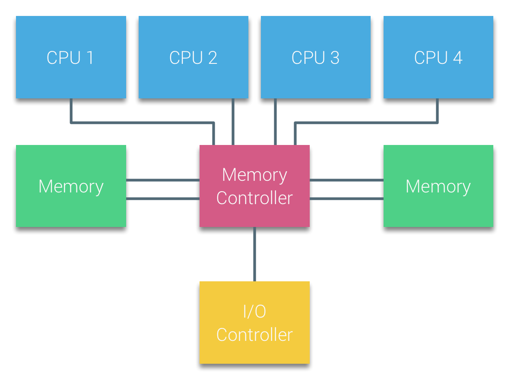
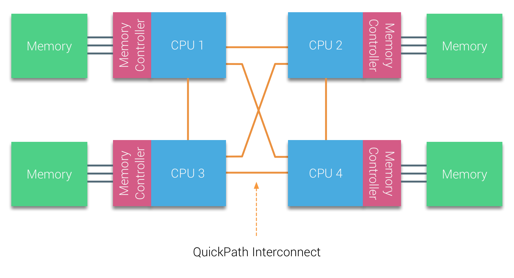
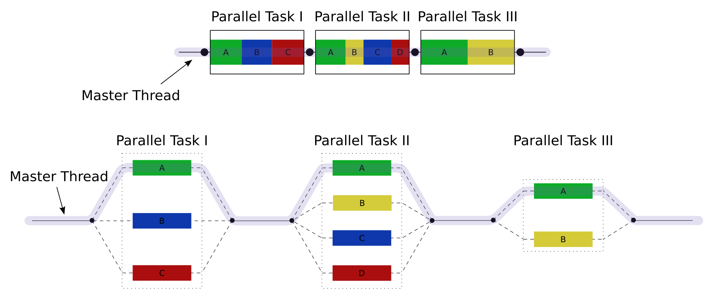

5. On-node Parallelism
Overview
In the last unit we were looking at how we can parallelise and optimise an application on a single core. In this unit we’ll start to look at how we can make use of the entire processor (or processors!). Specifically we’re going to cover:
- A quick revisit of Flynn’s taxonomy (with two new categories)
- The architecture of a shared memory system
- How to exploit parallelism with pthreads
- How to parallelise an application with OpenMP
- Advanced OpenMP functionality
Flynn’s Taxonomy Revisited
This unit begins in the same way as the previous unit – with Flynn’s taxonomy.

Figure 1: Flynn’s taxonomy
The four initial classifications defined by Flynn have since been subdivided and extended.
The Single Instruction, Multiple Threads (SIMT) execution model is widely used in parallel computing. SIMT could be thought of as a subcategory of SIMD, but where the SIMD is combined with multithreading, and each parallel element has its own independent registers and memory.
The Single Program, Multiple Data (SPMD) execution model is a subcategory of MIMD often used in distributed computing. In SPMD, tasks are divided and distributed to run on multiple processors with different inputs in order to obtain results much more rapidly.
In the last unit, we were focussing very much on the SIMD aspect of Flynn’s taxonomy; in this unit we’ll look at SIMT and SPMD approaches on a single node.
Shared Memory Systems
A shared memory parallel computer is a system in which a number of cores (or CPUs) work on a common, shared physical address space.
Although transparent to the programmer, there are typically two different forms of shared memory system in terms of memory access.
An UMA (Uniform Memory Access) system is one where the system has a flat memory model – latency and bandwidth are the same for all processors and all memory locations. This is sometimes also called symmetric multiprocessing (SMP).
In an UMA system, each CPU would typically be connected to a shared memory controller, which would act as a conduit between the CPUs and the main memory. With modern CPUs now containing tens of cores per chip, UMA designs are not typically used. As core counts increase, the single memory controller soon becomes a significant bottleneck.

Figure 2: An UMA design
A ccNUMA (cache-coherent Non-Uniform Memory Access) system is one in which memory is physically distributed, but logically shared. The latency and bandwidth of a memory access depends on whether the CPU has a direct connection to the memory, or whether it must be fetched remotely.
In a NUMA system, each CPU has its own local memory address space, and can additionally access any other CPUs memory address space through an interconnect.

Figure 3: A simple NUMA design
The NUMA design involved moving the memory controller on to the CPU, and was first introduced by AMD Opteron with “HyperTransport” in 2007, and into the Intel Nehalem architecture with “QuickPath” in 2008.
Further Reading
Cache Coherence
In any multi-core and multi-processor systems (UMA or ccNUMA) it is important that any data caches are kept coherent. Cache coherence is important because the same cache line could reside in several CPU caches, and if one is modified and evicted to main memory, the other CPUs cache could contain out of date data.
There are a number of cache coherence protocols, but for now we’ll look at the MESI protocol. Under the MESI protocol, a cache line can have 4 possible states:
M (modified) indicates the cache line has been modified in a cache, and that it resides in no other cache. Only when the cache line is evicted to memory will the memory reflect the current state.
E (exclusive) indicates that a cache line has been read from memory but not yet modified, and that it resides in no other cache.
S (shared) indicates that a cache line has been read from memory but not yet modified, and that there may be other copies in other caches.
I (invalid) indicates that the cache line does not contain valid information (i.e. the cache line was in a shared state and another processor has requested exclusive access to modify the cache line).
When a processor issues a read, the cache line is loaded on the core and its status is set to E. Should another process request the same cache line, both cachelines will be set to S. If a processor modifies data in the cache line, its status will be set to M, and all other instances of that cache line will be invalidated (I). A subsequent read by any process will cause the modified cache line to be evicted to memory (or a shared cache) to ensure each processor has a consistent view of data. Each cache line maintains a Core Valid Bits (CVB) register to indicate which processors a cache line is present on.
So a four processor shared memory system implementing the MESI protocol might look like this:
| P0 | P1 | P2 | P3 | CVB | |
| Initial State | I | I | I | I | 0000 |
| P0 reads memory location X | E | I | I | I | 1000 |
| P1 reads memory location X | S | S | I | I | 1100 |
| P2 reads memory location X | S | S | S | I | 1110 |
| P3 writes memory location X | I | I | I | M | 0001 |
| P0 reads memory location X | S | I | I | S | 1001 |
While cache coherence protocols are vitally important to ensure the correct operation of a multi-threaded application, they can also introduce performance degradation.
False Sharing
False sharing is a performance degrading usage pattern where two (or more) processors are accessing different memory addresses that reside within a single cache block. If one of the processors is writing to the cache block, each read by another processor will cause the entire cache block to be reloaded. Take the following for example,
struct my_struct_t {
int x;
int y;
};
struct my_struct_t f;
// The following two functions are running concurrently
int read_x() {
return f.x;
}
void write_y() {
f.y++;
}
Although the value of x in the struct is not changing, because the values are stored contiguously in memory the write function continually invalidates the cache line for other processors. This causes the cache line to be evicted and reloaded each time a read is issued.
In most cases, false sharing can be avoided or mitigated with simple code changes (or by the compiler!).
The Fork-Join Model and POSIX Threads
The Fork-Join Model
The fork-join model is a method for setting up and executing parallel programs that branch off at designated points and rejoin later on in execution (to continue sequential execution). It was formulated as a parallel design pattern at least as early as 1963.

Figure 4: An example of a fork-join execution
In Figure 4, there are three parallel tasks to be executed, with each block being executed by a varying number of threads. First, the master thread creates two child threads, which rejoin after the first task, then it creates three threads, which rejoin after the second task, and then finally creates a single additional thread for the third parallel task.
In C, perhaps the quickest (and dirtiest!) way to implement a fork-join model is with the POSIX fork() and wait() functions from <unistd.h>. A call to fork() will create a child process by duplicating the calling process. The new process is referred to as the child process, while the calling process is the parent process. On the parent, the fork call will return the process ID of the child; while on the child process, the fork call will return zero. Each process runs in a seperate memory space (but the content is duplicated at the time of the fork call), and continues execution from the fork() command.
A simple example might look like this:
#include <stdio.h>
#include <stdlib.h>
#include <sys/wait.h>
#include <unistd.h>
#define THREADS 5
void do_work(int i) {
printf("I'm thread %d\n", i);
}
int main(int argc, char *argv[]) {
pid_t threads[THREADS];
for (int i = 0; i < THREADS; i++) {
threads[i] = fork(); // start a new thread
if (threads[i] == 0) { // if child process
do_work(i); // call do work and then exit
exit(0);
}
}
for (int i = 0; i < THREADS; i++) { // on the master thread, wait for each forked process to finish
waitpid(threads[i], NULL, 0);
}
}
Although this may seem like a simple way to write parallel code, fork() creates an entire new process and clones the entire address space, code and stack for each child. Since the memory spaces are separated, communication between forked processes is difficult.
Instead, we’ll focus on some more lightweight solutions.
pthreads
POSIX Threads (or pthreads) is a parallel execution model that allows a program to spawn multiple different flows of work that are able to overlap in time. The pthreads API was defined in 1995 in the POSIX.1c standard, and an implementation is provided in almost every UNIX-like operating system (e.g. FreeBSD, Linux, MacOS, etc.).
Unlike the fork() command, pthreads creates a new thread within the same process, rather than a new process. This new thread shares the same memory space, but gets its own stack, registers and ID. Since threads share a memory space, they can communicate through shared memory; but, be warned, this can lead to race conditions and undefined behaviour.
Threads are created using the pthread_create() function, and rejoin the parent when the pthread_join() function is called. The pthread_create() function requires a function pointer (i.e. a pointer to a function, rather than a variable). A simple example is shown below, where each thread executes the perform_work(...) function, with the thread ID passed as a variable to the function.
#include <stdio.h>
#include <stdlib.h>
#include <pthread.h>
#define THREADS 5
int my_shared_val;
void *perform_work(void *ptr) {
int index = *((int *) ptr);
printf("Thread %d has started\n", index);
my_shared_val += index;
return NULL;
}
int main(int argc, char *argv[]) {
my_shared_val = 0;
pthread_t my_threads[THREADS];
int thread_args[THREADS];
// create threads
for (int i = 0; i < THREADS; i++) {
thread_args[i] = i;
pthread_create(&my_threads[i], NULL, perform_work, &thread_args[i]);
}
printf("All threads have now started\n");
// wait for threads to rejoin
for (int i = 0; i < THREADS; i++) {
pthread_join(my_threads[i], NULL);
}
printf("The value of my_shared_val is: %d\n", my_shared_val);
exit(0);
}
Since pthreads is an external library, it usually requires linking on the command line. Each compiler may be different in how pthreads is linked but usually the -pthread or -lpthread command line option is required. You should also bear in mind, that due to the nature of threading, the order of execution is non-deterministic. For example,
$ gcc -pthread -o pthread_demo pthreads_demo.c
$ ./pthread_demo
Thread 0 has started
Thread 3 has started
All threads have now started
Thread 1 has started
Thread 4 has started
Thread 2 has started
The value of my_shared_val is: 7
Besides thread management, the pthreads API also contains functionality for mutual exclusion (mutexes), monitors and synchronisation. In the example above, each thread is updating a shared value (adding the threads index), and in some cases an addition might be missed due to a race condition. Mutexes allow us to implement critical sections or atomic operations in our code.
So, for example, we could update our code to contain a critical section around our accumulation operation like so:
...
pthread_mutex_t lock;
...
void *perform_work(void *ptr) {
int index = *((int *) ptr);
printf("Thread %d has started\n", index);
pthread_mutex_lock(&lock); // lock our mutex for the accumulation
my_val += index;
pthread_mutex_unlock(&lock); // unlock our mutex
return NULL;
}
int main(int argc, char *argv[]) {
...
pthread_mutex_init(&lock, NULL);
// create threads
...
// wait for threads to rejoin
...
pthread_mutex_destroy(&lock);
printf("The final value of my_val is: %d\n", my_val);
exit(0);
}
In this updated code example, the mutex lock will be locked by each thread (not necessarily in order) so that the accumulation operations will never collide, and will thus avoid the case where an addition is missed.
Exercise
Try both of the pthreads examples above. Try to create undefined behaviour. Try to deadlock your code (you can always CTRL+C your code!).
The pthreads API contains around 100 procedures, but we’re only going to cover the very basics in this section. The following playlist provides a much deeper look at pthreads.
OpenMP
OpenMP (Open Multi-Processing) is an API that supports shared memory multiprocessing in C, C++ and Fortran. It provides an implementation of the Fork-Join model alongside some other parallel execution schemes and was first released for Fortran in 1997. The C/C++ specification was released in 2002 (part of version 2.0), two years after the release of version 2.0 of the Fortran specification.
The current version is 5.2 and was released in November 2021. While the initial release was primarily focussed on parallelising highly regular loops, the modern standard now includes support for tasking, accelerators, atomics, reductions, SIMD and more.
The central concept of the OpenMP standard is the use of compiler directives. Rather than explicitly starting and subsequently rejoining threads (like with pthreads), code meant for parallel dispatch is marked accordingly with a directive that the compiler can understand. The most commonly used directives are focussed on data parallelism (i.e. SPMD).
For example, consider the following code:
for (int i = 0; i < 1000; i++) {
c[i] = a[i] + b[i];
}
This could be parallelised between two processors by creating two threads, where each thread operates on half of the array each.
// thread 0
for (int i=0; i < 500; i++) {
c[i] = a[i] + b[i];
}
// thread 1
for (int i=500; i < 1000; i++) {
c[i] = a[i] + b[i];
}
This concept is known as work-sharing, and will be the focus of this section.
Parallel execution
But before we get to work-sharing, we’ll first cover some of the basics of parallel execution with OpenMP.
An OpenMP application relies on the presence of “parallel regions”, regions that are marked for parallel dispatch with compiler directives, or “pragmas”. In order to specify a block for parallel execution, we simply prefix it with #pragma omp parallel.
In addition to its compiler directives, the OpenMP header file (<omp.h>) also includes a number of useful functions. For example the omp_get_num_threads() and omp_get_thread_num() functions allow us to query the number of parallel threads, and find our own thread ID.
Let’s start with the simple pthreads code we used above, but instead we’ll implement it with OpenMP directives.
#include <stdio.h>
#include <stdlib.h>
#include <omp.h>
void perform_work(int thread_id) {
printf("Thread %d has started\n", thread_id);
}
int main(int argc, char *argv[]) {
int my_val = 0;
// create threads
#pragma omp parallel
{
int thread_id = omp_get_thread_num();
perform_work(thread_id);
my_val += thread_id;
}
printf("The final value of my_val is: %d\n", my_val);
exit(0);
}
As you can see, our OpenMP code is much shorter and concise. One significant difference between the pthreads code from earlier and our OpenMP implementation is that the number of threads is not specified in the code. The code above can be compiled and executed like so:
$ gcc -fopenmp -o openmp_demo openmp_demo.c
$ export OMP_NUM_THREADS=5
$ ./openmp_demo
Thread 2 has started
Thread 1 has started
Thread 3 has started
Thread 4 has started
Thread 0 has started
The final value of my_val is: 7
Our compile line no longer requires the -pthreads option, and instead includes -fopenmp (some compilers may require -omp, -fomp, -gomp, -lomp, or other variants). The number of threads is also now specified by the environmental variable OMP_NUM_THREADS (and will usually default to the total number of cores available if unset). But like earlier, there is no guarentee that the final value of my_val will be correct due to the non-deterministic nature of parallel execution without a critical section.
Note that you can also specify the number of threads on the same line as the command, like so:
$ OMP_NUM_THREADS=5 ./openmp_demo
A note for MacOS users
OpenMP may not be easily available on MacOS with the default compiler. You may have to install an OpenMP library (perhaps using
brew), and then pass a special option to the compiler. If you use Homebrew, you could try the following:$ brew install libomp $ clang -O3 -Xpreprocessor -fopenmp my_code.c -lompThe
-Xpreprocessor -fopenmpflag will pass the-fopenmpoption to the preprocessor, and the-lompwill link against the OpenMP library on compile.
Exercise
Besides the compile line and specification of number of threads, what other differences are there between the pthreads and OpenMP code?
Data scoping
Much like with pthreads, each thread started by OpenMP can access any variables that were in scope when the parallel region began. Each thread can also have their own private variables (such is the case with the thread_id variable in the example above, which is only within the scope of each thread).
Besides this, OpenMP can control the scope of other variables using attribute clauses. For example, we could make the my_val variable private such that each thread does not affect the master threads value (which remains 0 throughout execution).
#pragma omp parallel private(my_val)
{
int thread_id = omp_get_thread_num();
perform_work(thread_id);
my_val += thread_id;
}
The following data sharing attribute clauses are available (and we’ll look at some of them in more detail later):
shared: the data declared outside the parallel region is shared with each thread. By default all variables are shared (except loop iteration counters)
private: the data declared within a parallel region is private to each thread (and is not initialised before the parallel region)
default: allows a programmer to specify the default sharing behaviour (shared or none, where none means that any variables to be shared must be explicitly listed under the shared list)
firstprivate: the same as private, except the variable is initialised with the initial value from the master thread
lastprivate: the same as private, except that the original value is updated after the construct
reduction: a safe way of joining work from all threads
Worksharing for Loops
As we’ve already seen in Unit 4, loops are omnipresent in scientific applications and are therefore natural candidates for parallelisation. OpenMP was originally designed around exploiting loop-level parallelism, and this is still where it is predominently used today.
To enable worksharing, OpenMP provides the parallel for pragma. Given a loop structure, the parallel for pragma will divide the iterations evenly between the available threads, with each thread operating independently on a sub range. For example, to apply this to the vector addition example above,
#pragma omp parallel for
for (int i=0; i < 1000; i++) {
c[i] = a[i] + b[i];
}
As stated above, each thread will have a private iteration counter variable, but will share all other variables. Which thread performs which iteration will be implementation specific (unless specified with a directive), but typically each thread will perform an equal “chunk” (e.g., for 4 threads, thread 0 will perform iteration 0 to 249, thread 1 will perform iteration 250 to 499, thread 2 will perform… etc.), in parallel.
The data scoping clauses above can also be included, giving us finer control over the scope of any variables.
Exercise
Play around with OpenMP
parallel foron some simple loops and see if you can work out what effect each of the data scoping clauses has on some variables.
Let’s revisit our vectorised vector-add code from the previous unit.
#include <stdio.h>
#include <stdlib.h>
#include <sys/time.h>
#include <immintrin.h>
struct timeval t;
double get_time() {
gettimeofday(&t, NULL);
return t.tv_sec + (1e-6 * t.tv_usec);
}
int main(int argc, char *argv[]) {
int N = 10000000;
float *a = _mm_malloc(sizeof(float) * N, 64);
float *b = _mm_malloc(sizeof(float) * N, 64);
float *c = _mm_malloc(sizeof(float) * N, 64);
int i;
// initialise a and b
for (i = 0; i < N; i++) {
a[i] = (float) rand() / RAND_MAX;
b[i] = (float) rand() / RAND_MAX;
}
// perform vector add
double time = get_time();
for (i = 0; i < N; I+=8) {
__m256 a_v = _mm256_load_ps(a+i);
__m256 b_v = _mm256_load_ps(b+i);
__m256 c_v = _mm256_add_ps(a_v, b_v);
_mm256_store_ps(c+i, c_v);
}
time = get_time() - time;
// sum values for check
double sum = 0.0;
for (i = 0; i < N; i++) {
sum += c[i];
}
printf("Checksum is: %lf and took: %lf secs\n", sum, time);
_mm_free(a);
_mm_free(b);
_mm_free(c);
return 0;
}
We can further parallelise our application by adding worksharing directives to our vectorised code, meaning that we can exploit parallelism at the core- and the process-level.
Advanced OpenMP
The last section introduced some of the basics of the OpenMP approach to shared memory parallelism. In this section, we’ll cover some of the slightly more advanced features of OpenMP.
Synchronisation
Critical Regions
Perhaps the most common data corruption issue comes from race conditions, where multiple threads are updating a shared value simultaneously. In our earlier examples, the shared my_val variable sometimes returns an incorrect answer due to a race condition. We fixed this issue in pthreads by implementing a critical section using mutex locks – with each thread requesting a lock, executing critical code, and then releasing the lock. In OpenMP, we can use the omp critical pragma.
#pragma omp parallel
{
int thread_id = omp_get_thread_num();
perform_work(thread_id);
#pragma omp critical
my_val += thread_id;
}
You should note that in the example above, the critical pragma is only attached to the proceeding line of code. If you would like to execute more than a single line of code in a critical section, it should be enclosed in a scoping block (i.e. a set of curly braces).
When used inappropriately, critical sections can cause deadlocks (where one or more thread is waiting for a resource that never becomes available). This is particularly likely in large code bases with nested functions. If there is a critical section within a function that is called within a critical section, a deadlock is highly likely. Take the following code, for example:
#include <stdio.h>
#include <stdlib.h>
#include <omp.h>
int my_val;
int func(int n) {
int sum = 0;
#pragma omp parallel for
for (int i = 0; i < n; i++) {
int x = i*i+i;
#pragma omp critical
sum += i;
}
return sum;
}
int main(int argc, char *argv[]) {
int big_sum = 0;
#pragma omp parallel for
for (int i = 0; i < 1000; i++) {
#pragma omp critical
big_sum += func(i);
}
printf("Big sum is: %d\n", big_sum);
}
The application will first enter the critical section within main(), and it will then wait on resources becoming available in func(), causing a deadlock. To alleviate this, OpenMP allows critical sections to be named using:
#pragma omp critical (my_name)
Exercise
Try out the code above. Try removing the critical pragmas entirely and running the program multiple times. Do you get the same result each time? See if you can fix the application by providing the critical sections with names.
Barriers
In some cases it may be necessary to enforce synchronisation within an application. For example, all threads are updating a shared value and must have finished their updates before proceeding to the next stage of computation.
int main(int argc, char *argv[]) {
int big_sum = 0;
#pragma omp parallel
{
int my_sum = 0;
for (int i = 0; i < 1000; i++) {
my_sum += i;
}
#pragma omp critical
big_sum += my_sum;
printf("I'm thread %d and I think big sum is: %d\n", omp_get_thread_num(), big_sum);
}
}
In the example above, each thread will report a different value for big_sum, even with the critical section because they may execute the printf() function before other threads have finished.
We can enforce syncronisation with a barrier (omp barrier), where each thread will block on a barrier until all threads have reached the barrier.
...
#pragma omp critical
big_sum += my_sum;
#pragma omp barrier
printf("I'm thread %d and I think big sum is: %d\n", omp_get_thread_num(), big_sum);
...
Like critical sections, barriers can be a source of deadlock, and can cause significant performance defects. It should also be noted that there is a non-negotiable implicit barrier at the end of any parallel region and an implicit barrier at the end of any work sharing construct unless the nowait clause has been specified.
Reductions
In many of our examples up to now, we have been using critical sections in order to protect updates to a shared variable. In many cases, this may be a reduction, where a value calculated by each thread is reduced to a single variable for all threads.
For operations like this, OpenMP provides a more elegant solution. Take the following (thread safe) example,
#include <stdio.h>
#include <stdlib.h>
#include <omp.h>
int main(int argc, char *argv[]) {
int sum = 0;
#pragma omp parallel for
for (int i = 0; i < 100000000; i++) {
#pragma omp critical
sum += i;
}
printf("sum is: %d\n", sum);
}
Running the code produces the correct answer, but is not efficient due to the serialisation around the critical section. In fact, it may be faster to run this very simple example on a single thread.
$ gcc -fopenmp -o sum sum.c
$ time ./sum
sum is: 887459712
./sum 2.53s user 10.39s system 405% cpu 3.189 total
$ time OMP_NUM_THREADS=1 ./sum
sum is: 887459712
OMP_NUM_THREADS=1 ./sum 0.89s user 0.02s system 99% cpu 0.917 total
Instead of using a critical section for a reduction operation, we can instead use a reduction clause on our work sharing directive. For example,
#pragma omp parallel for reduction(+:sum)
for (int i = 0; i < 100000000; i++) {
sum += i;
}
Notice that we no longer require the critical section. Instead, we specify that the variable sum will be subject to an addition reduction. Our parallelised loop is now faster than the single threaded case.
$ gcc -fopenmp -o sum sum.c
$ time OMP_NUM_THREADS=1 ./sum
sum is: 887459712
OMP_NUM_THREADS=1 ./sum 0.26s user 0.01s system 53% cpu 0.499 total
$ time ./sum
sum is: 887459712
./sum 0.38s user 0.01s system 576% cpu 0.067 total
In C/C++, the following reductions are provided in the OpenMP standard:
| Identifier | Initialiser | Combiner |
+ |
omp_priv = 0 |
omp_out += omp_in |
- |
omp_priv = 0 |
omp_out += omp_in |
* |
omp_priv = 0 |
omp_out *= omp_in |
& |
omp_priv = ~ 0 |
omp_out &= omp_in |
| |
omp_priv = 0 |
omp_out |= omp_in |
^ |
omp_priv = 0 |
omp_out ^= omp_in |
&& |
omp_priv = 1 |
omp_out = omp_in && omp_out |
|| |
omp_priv = 0 |
omp_out = omp_in && omp_out |
max |
omp_priv = Smallest number in reduction list item type |
omp_out = (omp_in > omp_out) ? omp_in : omp_out |
min |
omp_priv = Largest number in reduction list item type |
omp_out = (omp_in < omp_out) ? omp_in : omp_out |
Loop Scheduling
As briefly mentioned earlier, OpenMP provides a mechanism to control the mapping of loop iterations to threads, if necessary. These are controlled with the schedule clause to a worksharing directive.
#include <stdio.h>
#include <stdlib.h>
#include <omp.h>
int main(int argc, char *argv[]) {
#pragma omp parallel for schedule(static)
for (int i = 0; i < 10; i++) {
printf("Thread %d is performing iteration %d\n", omp_get_thread_num(), i);
}
}
The simplest (and default) schedule is “static”, which divides the loop into contiguous blocks of roughly equal size. Each thread will then execute a single block.
$ OMP_NUM_THREADS=5 ./demo
Thread 0 is performing iteration 0
Thread 0 is performing iteration 1
Thread 1 is performing iteration 2
Thread 1 is performing iteration 3
Thread 3 is performing iteration 6
Thread 3 is performing iteration 7
Thread 2 is performing iteration 4
Thread 2 is performing iteration 5
Thread 4 is performing iteration 8
Thread 4 is performing iteration 9
If the work in each loop iteration is not constant, a static schedule may be suboptimal. For example, if the amount of work per iteration increases with each iteration, each thread will have progressively more work to do than the previous thread. One solution to this is to specify the size of a chunk. We could specify a chunk size of 1 (schedule(static,1)), meaning that each iteration is allocated to a thread in a round-robin fashion.
$ OMP_NUM_THREADS=5 ./demo
Thread 1 is performing iteration 1
Thread 1 is performing iteration 6
Thread 2 is performing iteration 2
Thread 2 is performing iteration 7
Thread 4 is performing iteration 4
Thread 3 is performing iteration 3
Thread 3 is performing iteration 8
Thread 0 is performing iteration 0
Thread 0 is performing iteration 5
Thread 4 is performing iteration 9
In a static schedule, the blocks are assigned to threads before execution, and so the distribution remains constant regardless of the amount of work in each iteration.
Besides static schedules, there are a number of alternatives. A dynamic schedule will divide iterations into blocks of a specified size (defaults to 1), and will start by scheduling a single block to each thread. When a thread finishes, it requests a new block to be allocated. So, for example with schedule(dynamic,3):
OMP_NUM_THREADS=5 ./demo
Thread 0 is performing iteration 0
Thread 0 is performing iteration 1
Thread 0 is performing iteration 2
Thread 1 is performing iteration 3
Thread 1 is performing iteration 4
Thread 1 is performing iteration 5
Thread 2 is performing iteration 6
Thread 2 is performing iteration 7
Thread 2 is performing iteration 8
Thread 4 is performing iteration 9
Further Reading
- 2.9.2 Worksharing-Loop Construct, OpenMP 5.0 Standard
Tasking
While the early OpenMP standards were heavily focussed on loop structures, the modern standard also provides tasking. The task directive is used to signify that a block of code is to be executed by a thread. When a thread encounters a task, it may choose to execute the task, or set up the appropriate data environment and then defer its execution. Conversely, the single directive indicates that the work within its block should only be executed by a single thread.
Consider the following simple example, where a parallel region is created but only a single thread executes the loop construct. Within the loop construct, a printf() is called probabilistically (approximately half of the time).
#include <stdio.h>
#include <stdlib.h>
#include <omp.h>
#include <time.h>
int main(int argc, char *argv[]) {
srand(time(NULL));
#pragma omp parallel
{
#pragma omp single
for (int i = 0; i < 10; i++) {
if ((double) rand() / RAND_MAX > 0.5) {
#pragma omp task
printf("Thread %d reporting\n", omp_get_thread_num());
}
}
}
}
Since the number of calls to printf() is not known, tasking is a natural choice for a problem such as this (or at least, a more complex problem with a similar structure!).
Environmental Variables
Much of the parallelisation provided by OpenMP is controllable at runtime. As we’ve already seen, OpenMP uses environment variables to control execution (e.g. OMP_NUM_THREADS). It also provides a number of environment variables that direct an application to provide us with information that might be critical to performance.
You can find the complete list of variables provided by OpenMP in Section 6 (Environment Variables) of the specification. We’ll cover a few of the important ones here:
OMP_SCHEDULE
For loops where the schedule has been specified as “runtime”, we can control the scheduling with the OMP_SCHEDULE environment variable. For example to set the schedule to guided with a chunk size of 4, we could use:
$ export OMP_SCHEDULE "guided,4"
OMP_NUM_THREADS
We’ve seen the OMP_NUM_THREADS variable throughout this unit, used to specify the number of threads to use. We can also provide a list of thread counts that are used for nested parallel regions. So, for example, if we wanted 4 threads for the first level of parallel regions, and 2 threads for any nested parallel regions, we could use:
$ export OMP_NUM_THREADS 4,2
OMP_PROC_BIND
As discussed at the very beginning of this unit, most modern systems implement NUMA memory systems, where a processor can access memory that is directly connected to it faster than some other memory spaces. The placement of processes and threads to cores can therefore have a significant effect on performance. Moreover, an operating system may choose to move a running application from one core to another, potentially affecting performance further.
The OMP_PROC_BIND variable describes how threads are bound to places. The variable can take on several values, including “true” or “false”, or “master”, “close” or “spread”.
OMP_PLACES
The OMP_PLACES variable defines the series of places to which threads are assigned. It can take on the values “threads”, “cores” or “sockets”.
The OMP_PROC_BIND and OMP_PLACES variables can be used in conjunction to control thread affinity.
On a multi-core (8), multi-processor (2) system, OMP_PLACES=cores OMP_PROC_BIND=close may have the following effect:
- thread 0 goes to core 0, on socket 0
- thread 1 goes to core 1, on socket 0
- thread 2 goes to core 2, on socket 0
- …
- thread 8 goes to core 8, on socket 1
- thread 9 goes to core 9, on socket 1
- … etc.
Conversely, with OMP_PLACES=cores OMP_PROC_BIND=spread,
- thread 0 goes to core 0, on socket 0
- thread 1 goes to core 8, on socket 1
- thread 2 goes to core 1, on socket 0
- thread 3 goes to core 9, on socket 1
- … etc.
Tuning these options can have a significant effect on performance.
OMP_DISPLAY_ENV
The final two variables we’ll briefly cover provide information on the runtime environment. The OMP_DISPLAY_ENV variable, when set to true, will output the OpenMP environment variables to the screen when the application is executed. For example:
$ OMP_DISPLAY_ENV=true ./demo
OPENMP DISPLAY ENVIRONMENT BEGIN
_OPENMP = '201511'
OMP_DYNAMIC = 'FALSE'
OMP_NESTED = 'FALSE'
OMP_NUM_THREADS = '5'
OMP_SCHEDULE = 'DYNAMIC'
OMP_PROC_BIND = 'FALSE'
OMP_PLACES = ''
OMP_STACKSIZE = '2097152'
OMP_WAIT_POLICY = 'PASSIVE'
OMP_THREAD_LIMIT = '4294967295'
OMP_MAX_ACTIVE_LEVELS = '1'
OMP_CANCELLATION = 'FALSE'
OMP_DEFAULT_DEVICE = '0'
OMP_MAX_TASK_PRIORITY = '0'
OMP_DISPLAY_AFFINITY = 'FALSE'
OMP_AFFINITY_FORMAT = 'level %L thread %i affinity %A'
OMP_ALLOCATOR = 'omp_default_mem_alloc'
OMP_TARGET_OFFLOAD = 'DEFAULT'
OPENMP DISPLAY ENVIRONMENT END
...
OMP_DISPLAY_AFFINITY
The OMP_DISPLAY_AFFINITY variable allows us to query how threads are being assigned to cores and sockets.
$ OMP_NUM_THREADS=5 OMP_DISPLAY_AFFINITY=true ./demo
level 1 thread 0x102dbc580 affinity 0-7
level 1 thread 0x16d5c3000 affinity 0-7
level 1 thread 0x16d7cf000 affinity 0-7
level 1 thread 0x16d9db000 affinity 0-7
level 1 thread 0x16dbe7000 affinity 0-7
...
Efficient OMP
Before we cover some tips and tricks to make the best use of OpenMP, you might like to learn more about OpenMP straight from one of its originators, Tim Mattson, from Intel.
Performance pitfalls
Like any other method of parallelising code, OpenMP is prone to a number of performance issues, such as load balancing or serial fraction (see Amdahl’s law in Unit 1). However, we can sometimes alleviate these issues. This section will cover some of the issues that might appear and how we can potentially mitigate them.
Avoid unnecessary parallelisation
Any parallel region of code has an associated cost as well as a benefit. Upon encountering a parallel region, the runtime will incur a penalty in either spawning threads, or in waking them from an idle state. If the work being parallelised is suitably small, it may be the case that this cost outweights the benefit. For these instances, there are a few potential solutions.
Firstly, we could avoid running a region in parallel if its unlikely to pay off. We can control this with the if clause, restricting our parallel region to a certain condition. For example,
int iters = 10;
#pragma omp parallel for if (iters > 100)
for (int i = 0; i < iters; i++) {
printf("Thread %d, running iteration %d\n", omp_get_thread_num(), i);
}
In the code above, the loop will only parallelise if there are more than 100 iterations to complete. The point at which parallelisation may become beneficial will be problem- and platform-specific, but you could explore this space with profiling (see Unit 3).
Alternatively, we could manually reduce the number of threads such that the overhead is minimised. We can do this by controlling the number of threads with a num_threads clause. For example,
int iters = 10;
#pragma omp parallel for num_threads(2)
for (int i = 0; i < iters; i++) {
printf("Thread %d, running iteration %d\n", omp_get_thread_num(), i);
}
In this example, regardless of the number of threads available to the application, this loop will only ever use 2. Less threads means less overhead, and thus this might improve the performance of a loop, without slowing down later loops that may benefit from more threads.
Avoid implicit barriers
As was mentioned in the previous section, there are implicit barriers at the end of all parallel regions in OpenMP. This means that if some threads finish their work early, they will block until all threads have finished. In cases where this is not required, we can instruct threads not to wait and to continue their execution.
There is an explicit barrier at the end of any parallel region that cannot be removed, but we can remove the implicit barrier from a work-sharing construct with the nowait clause. Consider the omp for pragma in the following code sample:
int iters = 10;
#pragma omp parallel
{
#pragma omp for
for (int i = 0; i < iters; i++) {
printf("Thread %d, running iteration %d\n", omp_get_thread_num(), i);
}
printf("Thread %d is done\n", omp_get_thread_num());
}
The output for this shows that each thread operates in lockstep, with each thread waiting at the end of the for-loop before executing the final printf().
$ OMP_NUM_THREADS=5 ./demo
Thread 1, running iteration 2
Thread 1, running iteration 3
Thread 2, running iteration 4
Thread 2, running iteration 5
Thread 0, running iteration 0
Thread 0, running iteration 1
Thread 3, running iteration 6
Thread 3, running iteration 7
Thread 4, running iteration 8
Thread 4, running iteration 9
Thread 1 is done
Thread 2 is done
Thread 0 is done
Thread 3 is done
Thread 4 is done
If we add the nowait clause to our omp for pragma, the output shows that we have removed one of the implicit barriers in our code.
$ OMP_NUM_THREADS=5 ./demo
Thread 1, running iteration 2
Thread 1, running iteration 3
Thread 1 is done
Thread 3, running iteration 6
Thread 3, running iteration 7
Thread 4, running iteration 8
Thread 4, running iteration 9
Thread 0, running iteration 0
Thread 0, running iteration 1
Thread 0 is done
Thread 4 is done
Thread 3 is done
Thread 2, running iteration 4
Thread 2, running iteration 5
Thread 2 is done
Before adding the nowait clause to a work sharing construct, its important that you check that it is safe to do so!
Avoid trivial load imbalance
In order to get the best out of OpenMP, the number of loop iterations should be large compared to the number of threads. If we have a small number of iterations spread over a similarly small number of threads (even if iterations does outnumber threads slightly), we are likely to end up with load imbalance.
Say for example, we have a triply nested loop where the outermost loop has been parallelised and does M iterations on N threads. In the case where M is greater than N, but less than 2N, we will have some threads performing two iterations, and some threads performing only one iteration (i.e. half the work). This will result in a significant waste of resourses and performance.
For loop nests like this, we may be able to make use of the collapse clause to combine multiple levels of loop.
So, for example,
#pragma omp parallel for collapse(2)
for (int i = 0; i < M; i++) {
for (int j = 0; j < N; j++) {
for (int k = 0; k < O; k++) {
...
}
}
}
Here the two outermost loops are collapsed into a single loop of length M × N, that can be executed in parallel. The collapse keyword is specific to perfect loop nests, i.e., loop nests where there is no code between them, and the loop counts do not depend on each other.
Avoid dynamic/guided loop scheduling or tasking unless necessary
All parallel work-sharing scheduling options (except static) and tasking constructs require some amount of nontrivial computation or bookkeeping. If there is only a small amount of work to do, it is likely that the overhead will dominate the performance improvement that can be gained. Think carefully before using these features, and consider (and benchmark) the alternatives!
Recommended Reading
- Introduction to High Performance Computing for Scientists and Engineers, Chapter 6 - Shared-memory parallel programming with OpenMP
- Introduction to High Performance Computing for Scientists and Engineers, Chapter 7 - Efficient OpenMP programming